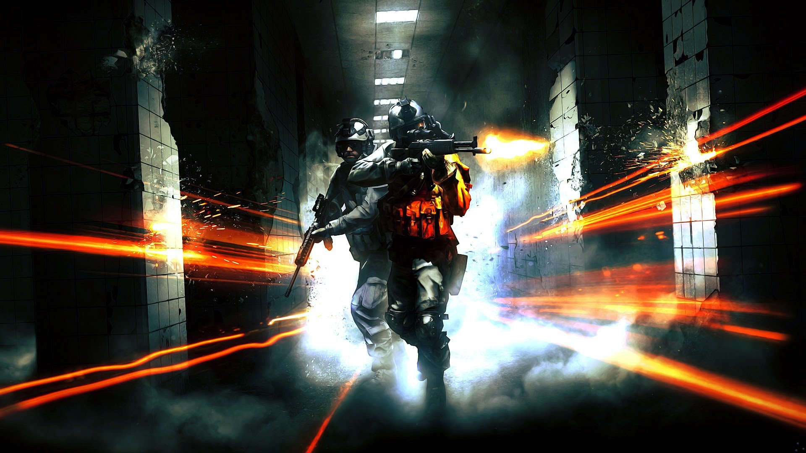
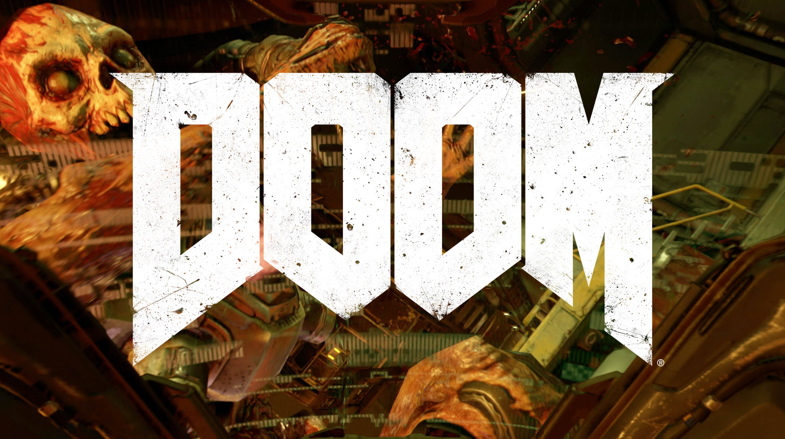

Battlefield

-DarkPlayer-
La verdad le daría un 9/10 si tuviera una campaña buena, hay mejores y la verdad es algo aburrida...
Call of Duty
ChinozFenix
Mi valoración sobre este juego, si se puede llamar de alguna manera, es un claro suspenso. Teniendo en cuenta que nunca he sido de Black ops se podría entender que no iba a ser mucho de mi agrado.
Titanfall

Robbiemar
Un juego bastante novedoso en su estilo de juego. Una movilidad impresionante, de los mejores juegos que he jugado con una movilidad impresionante. Apesar de eso carece de armas secundarias y primarias, solo hay tres tipos de titanes y su movilidad es bastante simple.
DOOM

Marty luthar Tim Break
En lo personal hablando de lo positivo me encanto la jugabilidad es decir, la velocidad de movimiento, el nuevo concepto de ejecuciones y el buen agarre que se siente en el control general. Por otro lado hablando de la trama me pareció repetitivo yo esperaba más suspenso y terror, en momentos me parecía que la trama cambiaba y al final volvía a lo mismo incluyendo los escenarios.
PROXIMAMENTE MÁS
Opiniones de los próximos juegos en desarrollo
.
..
...
....
.....
......